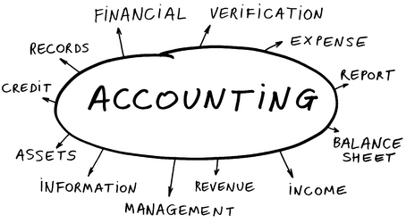

En tiempos de crisis es cuando más nos preocupan nuestros ahorros y más dudas tenemos sobre el estado de nuestras finanzas. FERSORIA le proporciona consejo y guía para sus inversiones, hipotecas, depósitos bancarios, fondos de pensiones, etc. Usted recibirá cómodamente por email un estudio personalizado con conclusiones sobre qué producto financiero se ajusta más a sus necesidades.
FERSORIA ofrece todo lo necesario para aquellos que quieran abrir una empresa en Irlanda o España:
Si vive en Irlanda y prefiere disfrutar de las ventajas de trabajar como autónomo, FERSORIA se encarga de todos los documentos necesarios. Si quiere operar bajo un nombre distinto al suyo, tendrá que registrar un nombre comercial.
Servicio de Contabilidad para pequeñas empresas y autónomos: mantenimiento de los libros contables, gestión de los flujos de caja, cálculo de impuestos y elaboración de las cuentas anuales.
FERSORIA cuenta con diseñadores gráficos y expertos en desarrollo de páginas web que le proporcionarán el logotipo y la página web corporativa que su empresa necesita para su camino al éxito. Le asesoraremos también en la elección de un proveedor de dominio en Internet para Irlanda o España.
Al consolidar todas las tramitaciones y servicios en un único proveedor no solamente se beneficia de una mayor agilidad y sencillez sino también del mejor precio. Usted gana por tres: en tranquilidad, en tiempo y en costes.